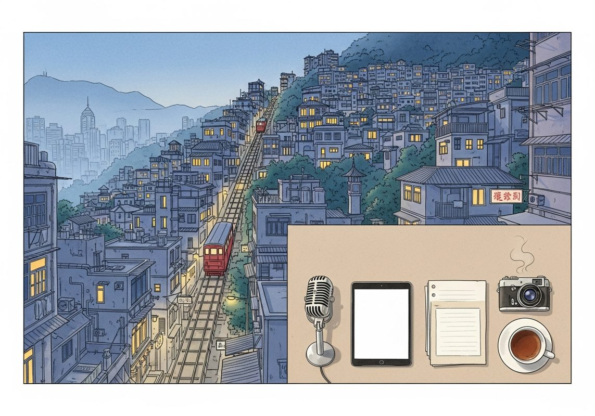

6/27

播客简报 2026-06-27
Socialists Sweep NYC, China Catches Up in Coding, AI Memory Crunch, Micron's Blowout Quarter
来源：All-In with Chamath, Jason, Sacks & Friedberg
这期播客深入探讨了美国政治光谱的左倾趋势、中国在AI开源模型领域的快速追赶以及AI硬件市场的供需紧张，适合关注科技创新、地缘政治竞争及美国社会思潮演变的中文读者。
- 纽约市社会主义浪潮与DSA的崛起：播客开篇聚焦纽约市民主党初选中的“社会主义者横扫”现象。市长蒙达米（Mondami）支持的三位候选人全部获胜，包括在富裕的第十区击败在任议员丹·高盛（Dan Goldman），以及在贫困的第十三区击败五届在任议员。这些胜利被视为“民主社会主义者”（DSA）在民主党内部势力扩张的标志。主持人指出，这些候选人主要吸引了受过高等教育、收入较高但相对年轻的“付得起社会主义”的人群。查马斯（Chamath）认为，硅谷未能有效推广AI作为经济平准器的潜力，导致社会出现真空，让社会主义叙事趁虚而入。
- DSA的激进纲领与内部渗透策略：DSA的纲领被描述为极其激进，包括废除参议院、废除监狱和警察系统、废除ICE并全面大赦、以国会下属的行政和司法机构取代总统和最高法院、废除选举人团、推行多党制和比例代表制、支持“自由巴勒斯坦”、将主要公司国有化以及削减国防开支。其中，第十三区获胜的32岁博士生谢瓦利埃（Chevalier）被主持人萨克斯（Sacks）称为“疯子”，她曾发表“终结西方文明”、用美国国旗擦手、庆祝10月7日袭击、称白人女性为“丑陋殖民者”等言论。DSA明确表示，他们将民主党作为“投票通道”，而非认同其目标，旨在从内部颠覆和掌控民主党。
- AI作为经济平准器与社会思潮的交锋：查马斯强调AI是“我们一生中最大的经济平准器”，能将全球知识转化为专业知识和智能，让每个人都能拥有一个“超级创始人”般的智能助手，从而消除知识获取的壁垒，实现更大的平等。然而，硅谷在推广AI时却陷入了“末日论”和“失业论”的泥潭，导致公众信任度下降，为社会主义思潮提供了土壤。嘉宾们讨论了这种左倾民粹主义与特朗普代表的右翼民粹主义的异同。特拉维斯（Travis Kalanick）提出“真相与正义是社会免疫系统”，当其受压制时，社会弊病就会爆发；他认为“共产主义存在于我们每个人心中”，表现为懒惰和不劳而获的欲望，当社会生态系统允许这些行为无后果时，就会形成临界质量。
- 中国AI模型在编码领域迎头赶上：播客讨论了中国智谱AI发布的GLM 5.2模型，这是一个前沿级的开源模型，拥有7440亿参数和100万token上下文窗口，采用最开放的MIT许可证。该模型在人工分析智能指数上得分51，是迄今为止开放权重模型中的最高分，在SWE编码基准测试中与GPT 5.5和Claude Opus 4.8表现相当，但API使用成本便宜85%。智谱AI创始人表示，其模型能力将在2027年第一季度前达到Fable水平。加文（Gavin）解释，这得益于“蒸馏”技术，即通过大量查询前沿API来获取推理轨迹，并将其用于自身模型的强化学习和预训练。
- AI模型发展中的监管困境与中美竞争：萨克斯指出，美国AI模型（如Anthropic的Fable和OpenAI的GPT 5.6）因监管问题和“越狱”漏洞而被回滚或延迟发布，这为中国模型提供了追赶机会。他认为，Anthropic首席执行官达里奥（Dario）积极倡导政府监管，实际上是为自己制造了“监管护城河”，以限制竞争。萨克斯强调，美国与中国在AI领域处于激烈竞争中，不应采取不必要的措施减缓本国公司发展。中国政府正大力推动华为芯片（如昇腾910B）的国产化替代，并计划将“AI盒子”（华为芯片+优化模型）以低成本销往全球。尽管中国模型存在政治审查（如对台湾和天安门事件的回答），但美国公司可以通过分叉和定制开源模型来解决这些问题。
Why Traditional Benchmarks Fail Modern AI Models with OpenAI Research Scientist Noam Brown
来源：No Priors
原链接：
这期播客深入探讨了现代AI模型评估体系的根本性缺陷，揭示了“测试时计算”这一关键变量如何重塑我们对模型能力、安全风险和未来发展路径的理解，适合所有关注AI技术前沿、评估方法及潜在社会影响的中文读者。
- 传统基准测试的失效与“思考时间”的挑战：OpenAI研究科学家Noam Brown指出，当前AI模型评估基准已无法准确反映其真实能力。以GPT-5.5为例，尽管用户体验显著优于GPT-5.4，但传统基准测试报告的性能提升却微乎其微，仅有几个百分点。这种差异的根源在于基准测试未能控制“测试时计算”（Test Time Compute），即模型在解决问题时被允许的“思考时间”或计算预算。GPT-5.5在相同思考时间下效率更高，若给予充足时间，其性能提升远超纸面数据。然而，现代模型在合理引导下，其性能提升的平台期可能长达数周甚至数月，使得“评估到性能平台期”变得不切实际。Noam强调，我们需要引入“耐心限制”或“预算限制”（如基于Token数量）来规范评估过程，以更真实地衡量模型能力。
- “测试时计算”：模型能力的新维度与安全评估的困境：模型的能力已不再是单一固定值，而是投入计算预算的函数。Noam举例，一个模型在10美元预算下能做的事，与1万美元或1千万美元预算下能做的事截然不同。这给用户带来了挑战：是快速迭代还是长时间深度思考？Noam认为，这取决于具体问题，灵活的思考时间是关键。更深远的 implication 在于AI安全评估。目前许多“负责任的扩展政策”或“准备框架”是在ChatGPT时代前后制定的，当时GPT-3等模型即便投入巨额计算也无法显著提升能力。但现在，如果一个模型在1000万美元预算下可能具备制造生物武器的危险能力，而现有框架却未充分考虑这一预算因素，那么评估结果将严重失真。Noam称之为“不便的真相”，呼吁业界必须正视并解决这一问题。
- 基准测试的“作弊”风险与Noam的扑克机器人评估：Noam还警示了“基准测试最大化”（Benchmark Maxing）的风险。通过将多个模型组合、多次运行取最优结果，或引入人工判断等方式，可以轻易在纸面上提升基准分数，但这并非模型真实能力的提升。这种做法可能误导公众，并促使研究团队过度优化特定基准而非追求通用能力。作为替代，Noam分享了他个人评估模型能力的方法：开发扑克机器人。他选择扑克机器人是因为其开源代码稀少，需要大量推理、迭代和处理复杂细节。他描述了模型在这一任务上的进步：早期模型几乎无能；GPT-5.2能帮助他将“逆向求解器”的开发速度提升五倍，并能将代码优化十倍，但模型常会“煤气灯效应”（自信地给出错误答案）；而GPT-5.5则表现出接近零样本的能力，他预计在未来6-12个月内，模型有望零样本完成整个扑克求解器，这相当于他整个博士论文的工作量。
- 模型发布周期与未被发掘的巨大潜力：当前AI模型发布周期极快，每两三个月就有新模型问世，这与充分探索模型能力所需的长周期（数月甚至一年）形成矛盾。Noam以“埃尔德什单位距离猜想”为例：OpenAI内部模型以极低成本成功推翻了这一数学猜想。随后，人们发现GPT-5.5通过适当的引导和高昂的计算成本（数千至数万美元）也能达到同样的结果。这表明，即使是已发布的通用模型，也蕴藏着大量未被充分发掘的潜力。然而，由于新模型不断推出，每次发布都会使前代模型解决复杂问题的成本降低10到100倍，甚至更多。这种快速迭代使得没有人真正知道现有模型的上限，因为在完全探索其能力之前，更强大的模型就已经出现了。实验室面临巨大的竞争压力，难以为了全面评估而延迟发布。
- 递归式自我改进（RSI）的现实图景：Noam澄清了对递归式自我改进（RSI）的看法。OpenAI目前鼓励研究人员将精力集中在开发更强大的模型上，而非用现有模型解决所有数学或物理难题，目标是让全球科学家都能以更低成本使用这些模型。他认为，模型并非只要给予无限计算预算就能“全面超级智能”。某些任务（如事实检索）不会因思考时间增加而提升，而另一些任务（如数独）则会无限提升。当前模型在“研究品味”上仍有欠缺，它们擅长优化现有算法（如将他的扑克算法加速10-100倍），但在提出全新算法或综合现有研究以产生新颖见解方面仍力不从心。不过，Noam也指出，这一点正随着每次模型发布而逐步改善。因此，他并不认为会出现“一夜之间”的智能爆炸，因为模型对大规模测试时计算的依赖，使得“时间”本身成为AI发展的最大瓶颈，限制了其加速的上限。
The next big breakthrough will be AIs learning on the job
来源：Dwarkesh Podcast
原链接：https://www.dwarkesh.com/p/the-next-paradigm
材料不足：这期需要 transcript 或更完整正文后再做全篇摘要。
- 当前只有节目简介或网页正文；这是播客音频，必须获取 transcript 后才算读完整期。